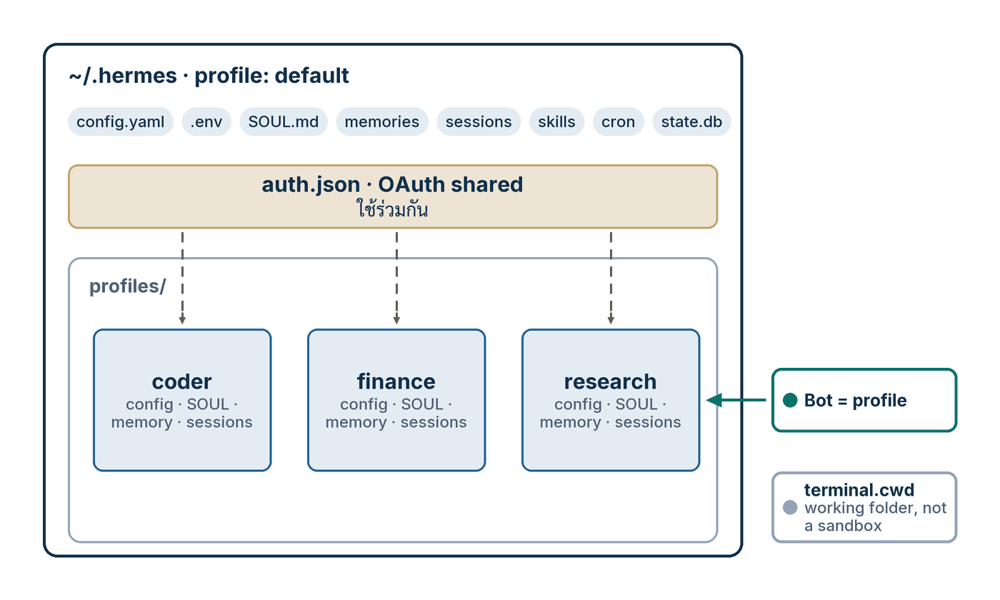

ในบทความนี้
In this post
🤔 ถ้าคุณอยากได้ agent สำหรับงานวิจัย อีกตัวสำหรับเขียนโค้ด และอีกตัวสำหรับงานการเงิน — ต้องลง Hermes สามชุดไหม?
ตอนที่แล้ว — #2 Local Models — เราต่อ Hermes Desktop เข้ากับโมเดลบนเครื่องของเราเอง แล้วคำถามที่ตามมาทันทีคือคำถามเรื่องการจัดระเบียบ: พอมีทั้งโมเดลที่เสียเงินและโมเดลฟรีอยู่ในมือ เราจะแยก "งานที่ควรใช้ตัวไหน" อย่างไรโดยไม่ต้องมานั่งเปลี่ยนโมเดลทุกครั้งที่เปิดแชตใหม่ และจะทำอย่างไรให้ agent ที่อ่านงบการเงินไม่เอาความจำจากงานเขียนโค้ดมาปน
คำตอบหนึ่งบรรทัด: Hermes เรียกสิ่งนี้ว่า profile และนิยามของมันสั้นมาก — "A profile is a separate Hermes home directory" profile คือ Hermes home directory อีกอันหนึ่ง มี config.yaml, .env, SOUL.md, ความจำ, session, skill, cron job และฐานข้อมูล state เป็นของตัวเองครบชุด[1] บทความนี้พาสร้าง profile สองทาง — เป็น Bot บนหน้าจอ และด้วยคำสั่งใน terminal — แล้วต่อด้วยการใส่บุคลิก ผูกโฟลเดอร์งาน ปักโมเดล และย้ายทั้งตัวข้ามเครื่อง
1. What a Profile Is — and What It Is Not
คำตอบตรง ๆ ก่อน: profile คือ Hermes home directory แยกต่างหาก ไม่ใช่ทั้งโปรแกรมที่ลงใหม่ profile ที่ตั้งชื่อแล้วอยู่ที่ ~/.hermes/profiles/<name>/ ส่วน profile ตั้งต้นคือ ~/.hermes เองโดยมีรหัสภายในว่า default เสมอ เอกสารย้ำว่า "No migration needed — existing installs work identically" ของเดิมที่คุณมีอยู่ไม่ต้องย้ายอะไรเลย[1]
กลไกเบื้องหลังเป็นตัวแปรสภาพแวดล้อมตัวเดียวคือ HERMES_HOME เอกสารอธิบายว่ามีไฟล์ในโค้ดเบสมากกว่า 119 ไฟล์ที่หา path ผ่าน get_hermes_home() ดังนั้นเมื่อชี้ตัวแปรนี้ไปที่โฟลเดอร์ไหน state ของ Hermes ทั้งหมด — config, session, ความจำ, skill, ฐานข้อมูล state, PID ของ gateway, log และ cron job — ก็ย้ายตามไปทั้งก้อน[1] และเมื่อคุณสร้าง profile หนึ่งอัน มันจะกลายเป็นคำสั่งของตัวเองทันที: สร้าง coder แล้วคุณมี coder chat, coder setup, coder gateway start ใช้ได้เลย
{kind=link}

ที่ต้องแยกให้ขาดตั้งแต่ต้นคือคำสามคำที่คนสับสนกันบ่อยที่สุด เอกสารแยกไว้ชัดเจนสามข้อ[1]:
- profile = state directory ของ Hermes เอง —
config.yaml,.env,SOUL.md, session, ความจำ, log, cron job และ state ของ gateway - workspace หรือ working directory = จุดที่คำสั่ง terminal เริ่มทำงาน ควบคุมแยกต่างหากด้วย
terminal.cwd— ไม่ใช่โฟลเดอร์ของ profile - sandbox = สิ่งที่จำกัดการเข้าถึงไฟล์ และเอกสารเขียนตัวหนาไว้ว่า "Profiles do not sandbox the agent" — บน backend
localที่เป็นค่าเริ่มต้น agent ยังเข้าถึงไฟล์ได้เท่ากับบัญชีผู้ใช้ของคุณทุกประการ
ข้อสามคือข้อที่ผมอยากให้ผู้อ่านชาวไทยจำให้แม่นที่สุด เพราะ "แยก profile" ฟังดูเหมือน "แยกกล่อง" แต่มันไม่ใช่กำแพงความปลอดภัย มันคือการแยก สถานะ ไม่ใช่การแยก สิทธิ์ ถ้าคุณต้องการกำแพงจริง ๆ ต้องไปที่ระดับ execution backend ซึ่งเป็นเรื่องของ #7 Safety, Remote & Recovery ส่วนกลไกของ Bot Mode ที่ทำให้ profile คุยกันเองได้อยู่ใน Hermes #2 Agent Teams และการแจก profile เป็น git repository สำหรับทั้งองค์กรอยู่ใน Hermes #10 Desktop & Fleet — ตอนนี้ผมจะอยู่กับเครื่องเดียวของเราเอง
💡 ชื่อ profile ตั้งได้แค่ไหน: เอกสารอ้างอิงบอกกว้าง ๆ ว่า "Must be a valid directory name (alphanumeric, hyphens, underscores)"[2] ส่วนซอร์สโค้ดเข้มกว่านั้น —hermes_cli/profiles.pyตรวจด้วย regex^[a-z0-9][a-z0-9_-]{0,63}$(ตัวพิมพ์เล็กเท่านั้น) และกันชื่อสงวนไว้หกชื่อคือhermes,default,test,tmp,root,sudo[9] ตั้งชื่อเป็นresearch,coder,financeปลอดภัยเสมอ
2. What a Profile Owns, and What It Shares
คำตอบตรง ๆ: profile เป็นเจ้าของทุกอย่างที่เป็น state ของ Hermes — config, กุญแจ, บุคลิก, ความจำ, session, skill, cron และฐานข้อมูล — แต่ ไม่ได้ เป็นเจ้าของสามอย่างที่ยังใช้ร่วมกันทั้งเครื่อง: การล็อกอินแบบ OAuth ที่ราก, HOME ของระบบปฏิบัติการ และตัวโค้ด Hermes เอง ตารางนี้คือรายการเต็ม
| Item | Per profile? | Path | Note |
|---|---|---|---|
config.yaml | ใช่ | <profile>/config.yaml | โมเดล, provider, toolset, ทุกการตั้งค่า[1] |
.env | ใช่ | <profile>/.env | API key และ bot token — ถูกตัดออกจากทั้ง export และ distribution เสมอ[1][4] |
SOUL.md | ใช่ | <profile>/SOUL.md | บุคลิกและคำสั่งประจำตัว โหลดจาก HERMES_HOME เท่านั้น[6] |
memories/ | ใช่ | <profile>/memories/ | เป็นของผู้ติดตั้ง distribution ไม่แตะต้องตอน update[4] |
sessions/ | ใช่ | <profile>/sessions/ | ประวัติแชต ถูกกันออกจาก --clone-all[2] |
skills/ | ใช่ | <profile>/skills/ | แต่ hermes update ซิงก์ skill ใหม่ให้ทุก profile — ดูตอนที่ 7[1] |
| cron jobs | ใช่ | <profile>/cron/ | Routine ของ Bot คือ cron job ชื่อ [bot:<name>] <routine>[3] |
mcp.json | ใช่ | <profile>/mcp.json | MCP server ที่ agent ตัวนี้ต่ออยู่[4] |
state.db | ใช่ | <profile>/state.db | นับเป็น per-profile history จึงถูกกันออกจาก --clone-all[2] |
profile.yaml | ใช่ | <profile>/profile.yaml | คีย์ description, description_auto, display_name[2][9] |
auth.json (OAuth) | ไม่ — ใช้ร่วมกัน | ~/.hermes/auth.json | ทุก profile อ่านการล็อกอินจากราก และการ refresh ใน profile ไหนก็เขียนกลับที่ราก[1] |
HOME ของระบบปฏิบัติการ | ไม่โดยค่าเริ่มต้น | HOME จริงของผู้ใช้ | บนการติดตั้งแบบ host ยังใช้ HOME จริงเพื่อให้ git/ssh/gh/npm ทำงานได้ เปลี่ยนด้วย terminal.home_mode: profile[1][7] |
| ตัวโค้ด Hermes | ไม่ — ใช้ร่วมกัน | ติดตั้งชุดเดียว | "hermes update pulls code once (shared)" โค้ดดึงครั้งเดียวใช้ทั้งเครื่อง[1] |
สามแถวล่างคือสามแถวที่ผมเห็นคนเข้าใจผิดบ่อยที่สุด และผิดคนละแบบ แถว auth.json เป็น ข้อดี ที่ตั้งใจออกแบบมา — คุณล็อกอินครั้งเดียวแล้วทุก profile ใช้ได้ ไม่ต้องจ่ายหลายบัญชี แถว HOME เป็น ข้อแลกเปลี่ยน ที่เอกสารเขียนตรง ๆ ว่า "host profiles share normal user-level CLI state by default" — profile ที่ต่างกันยังใช้ ~/.ssh และ ~/.gitconfig ชุดเดียวกัน ถ้าคุณต้องการตัวตน git คนละคนจริง ๆ ต้องเปิด terminal.home_mode: profile แล้วไปตั้ง ~/.ssh, ~/.gitconfig, ~/.config/gh ใหม่ในโฟลเดอร์ {HERMES_HOME}/home ของ profile นั้นเอง[7] ส่วนแถวโค้ดเป็นเพียงคำอธิบายว่าทำไมการมีสิบ profile ถึงไม่กินดิสก์เป็นสิบเท่า
3. Procedure A — Create a Bot on Screen
คำตอบตรง ๆ: ใน Hermes Desktop คุณไม่ต้องหาเมนูชื่อ "profile" เลย เพราะโหมด Bot Mode ทำให้ Bot หนึ่งตัวคือ profile หนึ่งอัน เอกสารเขียนไว้ตรงตัวว่า "There is no new primitive to learn: a Bot is a Hermes profile" และ "Bot Mode is a UI over that primitive"[3] สร้าง Bot ก็คือสร้าง profile ทำตามเก้าขั้นนี้
- เปิดแท็บ Bots ที่อยู่ถัดจาก Sessions ใน sidebar ซ้าย — Bot Mode ติดตั้งมาในตัวแอปและเปิดอยู่แล้ว ไม่ต้องลงอะไรเพิ่ม และจะมีไทล์ Routines มาจอดข้างบทสนทนาขณะที่แท็บนี้ทำงานอยู่[3]
- กด New Agent ในหน้ารายชื่อ ทางลัดคือสามช่อง — Name, Title, Description — แล้ว Bot เกิดขึ้นภายในไม่กี่วินาที พร้อมแนะนำตัวเองเป็นข้อความแรกใน Bot Chat ของมัน[3]
- เขียนช่อง Description ให้เหมือนเขียนให้คนอื่นอ่าน ไม่ใช่ให้ตัวเองจำ เพราะรายชื่อเพื่อนร่วมทีม — "names and roles from each profile's title/description" — ถูกใส่เข้าไปใน system prompt ของทุก Bot Chat ทำให้ Bot ตัวอื่นรู้ว่าใครทำอะไรก่อนเลือกผู้รับ[3] และคำบรรยายเดียวกันนี้ยังเป็นสิ่งที่ kanban orchestrator ใช้จัดงาน "based on role instead of profile name alone"[2]
- กางส่วน Advanced เลือกระหว่าง Clone from an existing profile ซึ่งเริ่มจาก config, skill, SOUL และความจำของ Bot ตัวอื่น กับ Fresh profile ที่เริ่มใหม่หมด และมี Create empty สำหรับข้าม bundled skill ทั้งชุด[3]
- ตั้ง Model & provider pin ให้ Bot มีโมเดลของตัวเอง เอกสารบอกว่าคู่ provider/model ใดก็ได้ที่ Hermes รู้จัก และ Bot คนละตัวรันคนละโมเดลพร้อมกันได้ — "Leave it unset to inherit from the launch profile" ถ้าไม่ตั้งก็รับค่าจาก profile ที่เปิดแอปมา[3]
- ใส่ Custom SOUL.md — บุคลิกและคำสั่งประจำตัวของ Bot นี้ (รายละเอียดว่ามันถูกใช้อย่างไรอยู่ในตอนที่ 5)
- ติ๊ก per-skill, per-toolset และ per-MCP-server enablement ให้เหลือเฉพาะความสามารถที่ผู้เชี่ยวชาญตัวนี้ต้องใช้จริง ส่วน Shared keys เปิดอยู่โดยค่าเริ่มต้น — Bot ใหม่ใช้ OAuth/token pool ร่วมกับ profile หลัก เพื่อไม่ให้การ refresh ของฝั่งหนึ่งไปทำให้อีกฝั่งใช้ไม่ได้[3]
- บันทึกแล้วคลิกแถวของ Bot เพื่อเข้าไปที่ Bot Chat ของมัน ซึ่งเป็นบทสนทนาถาวรที่ถูกสร้างและปักหมุดตั้งแต่วินาทีที่ Bot เกิด — คลิกแถวเมื่อไรก็กลับมาที่ห้องเดิมเสมอ[3]
- ยืนยันจาก terminal ด้วย
hermes profile list— Bot ที่เพิ่งสร้างจะโผล่มาเป็น profile ธรรมดาหนึ่งแถว และhermes -p <bot> chatเปิด agent ตัวเดียวกันนั้นได้ทันที นี่คือตารางความเท่าเทียม CLI ที่เอกสาร Bot Mode ให้ไว้[3]
เรื่องเวอร์ชันที่ควรพูดให้ตรง: Bot Mode เป็น bundled desktop plugin ที่เปิดอยู่โดยค่าเริ่มต้น และรุ่นที่ประกาศเรื่องนี้เป็นทางการคือ Hermes Agent v0.21.0 (tag v2026.8.31) "The Pantheon Release" ซึ่งเขียนไว้ว่า "Bot Mode is now a bundled, default-on part of the desktop app: every agent profile gets a name, a deterministic avatar face"[10] ถ้าไม่อยากใช้ ปิดได้ที่ Settings → Plugins → Bots เอกสารบอกว่ารายชื่อ Bot, ไทล์ Routines และ middleware ของช่องพิมพ์จะถูกถอนออกทันทีโดยไม่ต้องรีสตาร์ต และ "Your profiles, sessions, and cron jobs are untouched either way; Bot Mode never owns your data, it only renders it" — profile ของคุณไม่หายไปไหน เพราะ Bot Mode เป็นแค่หน้าจอที่วาดมันออกมา[3]
4. Procedure B — The Same Thing from the Terminal
คำตอบตรง ๆ: คำสั่งเดียวสร้างเสร็จ และ Hermes แถม alias ให้เป็นคำสั่งใหม่ในเชลล์ทันที ก่อนจะไล่ทีละขั้น ผมตรวจชุดคำสั่งย่อยทั้งหมดจากหน้าอ้างอิงในวันที่เขียนแล้ว มีสิบสามตัวพอดี: list, use, create, describe, delete, show, alias, rename, export, import, install, update, info[2] เจ็ดขั้นนี้ใช้แค่หกตัวแรก
- สร้าง:
hermes profile create research --description "อ่านซอร์สโค้ดและเอกสารภายนอก แล้วเขียนสรุปผล"— ได้ profile พร้อม alias ชื่อresearchคำบรรยายถูกบันทึกไว้ที่<profile_dir>/profile.yamlจึงอยู่ข้ามการรีบูตและแชร์กับ gateway ได้[2] - ตรวจว่าเกิดจริง:
hermes profile list— แสดงทุก profile โดยตัวที่ active ถูกทำเครื่องหมายด้วย*และในตารางแบบเต็มยังมีคอลัมน์ Model, Gateway, Alias และ Distribution[2][4] - คุยกับมัน:
hermes -p research chatหรือใช้ alias สั้น ๆ ว่าresearch chatก็ได้ alias ถูกเขียนไว้ที่~/.local/bin/researchและเอกสารบอกตรง ๆ ว่า "it's justhermes -p <name>under the hood"[1] ธง-pใช้ได้ทุกตำแหน่ง เช่นhermes chat -p research -q "hello" - ตั้งเป็นค่าเริ่มต้นแบบติดหนึบ:
hermes profile use researchทำให้คำสั่งhermesเปล่า ๆ ทั้งหมดวิ่งไปที่ profile นี้ เอกสารเปรียบเทียบว่า "Likekubectl config use-context" และกลับด้วยhermes profile use default[1] - ดูว่าตอนนี้อยู่ที่ไหน: prompt เปลี่ยนเป็น
research ❯แทน❯เฉย ๆ, banner ตอนเปิดขึ้นว่าProfile: research, คำสั่งhermes profileเปล่า ๆ บอกชื่อ path โมเดลและสถานะ gateway ส่วนในแชตพิมพ์/profileจะได้ชื่อ profile ที่ใช้อยู่กับ home directory ของมัน[1][8] - ดูรายละเอียดตัวเดียว:
hermes profile show researchพิมพ์ Path, Model, Gateway, จำนวน Skills, สถานะ.envและSOUL.mdรวมถึงตำแหน่ง Alias ออกมาให้ครบ[2] - ตั้งค่าให้ใช้งานได้:
research setupเพื่อใส่ API key และเลือกโมเดล หรือถ้าใช้ Nous Portal เอกสารแนะทางลัดไว้ว่า "Quickest setup: runhermes setup --portalinside the new profile to wire up models + tools at once"[1]
Cloning instead of starting blank
ถ้า profile ใหม่ควรหน้าตาเหมือนตัวที่มีอยู่แล้ว มีธงสำหรับก๊อปปี้สามระดับ ผมตรวจความหมายของแต่ละธงจากตารางในหน้าอ้างอิงคำสั่งแล้ว และข้อสำคัญคือ --no-skills ปฏิเสธ ที่จะทำงานร่วมกับธง clone ทั้งสามตัว เพราะการ clone จะลาก skill กลับเข้ามาอยู่ดี[2]
# ก๊อป config.yaml, .env, SOUL.md และ skill จาก profile ปัจจุบัน — session และความจำเริ่มใหม่
hermes profile create work --clone
# ก๊อปทุกอย่าง ยกเว้น per-profile history (sessions, state.db, backups, state-snapshots, checkpoints)
hermes profile create backup --clone-all
# ระบุต้นทางเองแทนที่จะใช้ profile ปัจจุบัน
hermes profile create work --clone-from coder
hermes profile create work-backup --clone-from coder --clone-all
# profile เปล่าที่ไม่มี bundled skill เลย — เขียน marker .no-bundled-skills ไว้กัน update มา seed ซ้ำ
hermes profile create orchestrator --no-skills --description "Coordinates the board; does not implement."5. Persona, Folder and Model
คำตอบตรง ๆ: สามอย่างที่ทำให้ profile "เป็นบทบาท" จริง ๆ อยู่คนละที่กัน — บุคลิกอยู่ในไฟล์ SOUL.md ที่รากของ profile, โฟลเดอร์งานอยู่ในคีย์ terminal.cwd ของ config.yaml และโมเดลอยู่ในคีย์ model.default ตั้งได้ทั้งจากบรรทัดคำสั่งและจากหน้าจอ
SOUL.md — the persona
เอกสาร Personality อธิบาย SOUL.md ว่าเป็น primary identity ของ agent และกินช่องแรกของ system prompt — "It occupies slot #1 in the system prompt, replacing the hardcoded default identity" Hermes โหลดไฟล์นี้จาก HERMES_HOME เท่านั้น ไม่ มองหาใน working directory ที่คุณเปิดโปรแกรมมา ซึ่งเป็นเหตุผลว่าทำไมบุคลิกจึงเป็นของ profile ไม่ใช่ของโปรเจกต์[6] สองเรื่องที่ต้องรู้ต่อจากนั้น: หนึ่ง เนื้อหาถูกใส่เข้า prompt แบบคำต่อคำ แต่ผ่านการสแกนก่อน — "that content is injected verbatim after security scanning and truncation" และเอกสารระบุว่าไฟล์นี้ "is scanned like other context-bearing files for prompt injection patterns before inclusion" จึงควรเขียนเป็นบุคลิกและน้ำเสียง ไม่ใช่คำสั่งแปลก ๆ ที่พยายามแทรกเข้าไป[6] สอง เอกสาร Profiles เตือนว่าการแก้ SOUL.md "take effect cleanly on a new session" — session ที่เปิดค้างอยู่อาจยังใช้ prompt เดิม[1]
# บุคลิก: SOUL.md ที่รากของ profile
echo "You are a focused coding assistant." > ~/.hermes/profiles/coder/SOUL.md
# โฟลเดอร์งาน: terminal.cwd ต้องเป็น absolute path
coder config set terminal.cwd /absolute/path/to/project
# โมเดล: ค่าเริ่มต้นของ profile นี้
coder config set model.default anthropic/claude-sonnet-4Working folder and model
โฟลเดอร์งานสำคัญกว่าที่คิด เพราะเอกสารเตือนว่า cwd: "." บน backend local แปลว่า "the directory Hermes was launched from" ไม่ใช่โฟลเดอร์ของ profile[1] ถ้าอยากให้ profile หนึ่งเริ่มที่โปรเจกต์หนึ่งเสมอ ต้องเขียน absolute path ลงไปตรง ๆ และเอกสารเสริมอีกข้อที่ผมชอบมาก: "Asking the model 'what directory are you in?' is not a reliable isolation test" — อย่าถาม agent ว่าอยู่โฟลเดอร์ไหน ให้ตั้ง terminal.cwd ให้ชัดแทน
# ~/.hermes/profiles/coder/config.yaml — สามค่าเดิมในรูปแบบ YAML
terminal:
backend: local
cwd: /absolute/path/to/project
home_mode: auto # auto | real | profile — นโยบาย HOME ของ subprocessส่วนโมเดล ถ้าชอบทำจากหน้าจอมากกว่า Hermes Desktop มีทางที่ตรงกว่า: เอกสารบอกว่า Settings → Model คือที่เดียวที่เขียนค่าเริ่มต้นจริง — "That 'main' model is your per-profile global default — it's what new chats, crons, subagents, and auxiliary tasks start from, and it's the only place that writes it" และย้ำว่า "Each profile keeps its own default"[5] สิ่งที่ต้องระวังคือตัวเลือกโมเดลในช่องพิมพ์ไม่ใช่ค่าเริ่มต้น — เอกสารเขียนว่า "The composer picker is sticky UI state and never touches your default" มันจำไว้ต่อเครื่อง ไม่เขียนลง profile และเมื่อคุณมี profile ตั้งแต่สองอันขึ้นไป หน้าตั้งค่าที่ผูกกับ config — Model, Workspace, Safety, Memory & Context, Voice, Chat, Advanced และ Tools & Keys — จะขึ้นแถบชิป Applies to ที่ด้านบนให้เลือกว่ากำลังแก้ของ profile ไหน ค่าเริ่มต้นตามด้วย profile ที่ใช้งานอยู่ และแถบนี้ถูกซ่อนทั้งแถบเมื่อมี profile น้อยกว่าสองอัน[5]
💡/personalityไม่ใช่ profile และไม่ใช่ SOUL: เอกสารแยกไว้เป็นประโยคเดียว — "SOUL.md= baseline voice" ส่วน "/personality= temporary mode switch" มันคือ overlay ระดับ session ที่ทับ system prompt ของบทสนทนานั้นชั่วคราว ไม่ได้แก้ตัวตนถาวรของ profile[6] ใช้ผิดที่แล้วจะงงว่าทำไมบุคลิกหายไปตอนเปิดแชตใหม่
6. Move a Profile to Another Machine
คำตอบตรง ๆ: hermes profile export แพ็ก profile ทั้งอันเป็นไฟล์ .tar.gz หนึ่งไฟล์ โดย auth.json และ .env ถูกตัดออกเสมอ แล้ว hermes profile import ที่ปลายทางติดตั้งมันเป็น profile ใหม่ — มันปฏิเสธที่จะเขียนทับของเดิม และห้ามนำเข้าเป็นชื่อ default[2]
# จาก CLI — auth.json และ .env ถูกตัดออกเสมอ
hermes profile export research
hermes profile export research -o ./research.tar.gz
hermes profile import ./research.tar.gz --name research
# สองคำสั่งเดียวกันในแชต (CLI, TUI, Desktop)
/export research -o ~/Desktop/research.tar.gz
/import ~/Downloads/research.tar.gz --name research-2
# อ่านไฟล์ก่อนส่งให้คนอื่นเสมอ
tar -tzf research.tar.gz | lessบรรทัดสุดท้ายไม่ใช่พิธีกรรม เอกสาร Profile Distributions ขึ้นกล่องเตือนไว้ว่า export คือ "a snapshot of your profile, not a curated release" และต่างจาก distribution ตรงที่มัน สามารถ มี memories/, sessions/ และ USER.md ติดไปด้วย เพราะ "Credentials are filtered by filename; content is not" — ตัวกรองดูแค่ชื่อไฟล์ ไม่ได้อ่านเนื้อหา และเมื่อเป็น profile ที่ตั้งชื่อแล้ว "A named profile copies the whole directory minus auth.json / .env" ทั้ง state.db log และ cache ก็ไปด้วย ไฟล์จึงใหญ่ได้มาก[4] บนหน้าจอ Desktop มีสามประตูที่ทำเรื่องเดียวกัน: ⌘K → Export profile…, คลิกขวาที่ช่อง profile ใน rail แล้วเลือก Export profile… หรือปุ่ม import ข้าง ๆ เครื่องหมาย + ของ rail และ export จาก Desktop จะแถมไฟล์ desktop.json ที่พก skin, โหมดสว่าง/มืด, ธีมกำหนดเอง, สีของ rail และ layout หน้าต่างไปด้วย[4][5]
-o มีค่าเริ่มต้นเป็น <name>.tar.gz พร้อมตัวอย่างว่า "Creates work.tar.gz in the current directory"[2] และหน้าอ้างอิง slash command พูดตรงกันว่า "Defaults to the active profile and <name>.tar.gz in the current directory"[8] แต่คู่มือ Profile Distributions บอกตรงข้ามว่า "Without -o, the CLI and TUI place the archive in Hermes's managed profile-exports/ directory under the default Hermes home, not in the current working directory" พร้อมเหตุผลว่าเพื่อกันไฟล์ snapshot หลุดเข้าไปใน git checkout[4] ผมยืนยันไม่ได้ว่าเวอร์ชันที่คุณติดตั้งเป็นแบบไหน ทางที่ปลอดภัยคือใส่ -o ทุกครั้ง แล้วคุณจะรู้แน่นอนว่าไฟล์อยู่ที่ไหนไฟล์ .tar.gz เหมาะกับการส่งครั้งเดียวหรือการย้ายเครื่อง แต่ถ้าเป็น agent ที่คุณจะปล่อยรุ่นใหม่เรื่อย ๆ ให้ทั้งทีมหรือทั้งองค์กร Hermes มีอีกทางคือ profile distribution ที่แพ็ก profile เป็น git repository พร้อม distribution.yaml แล้วให้ปลายทาง hermes profile install และ hermes profile update ดึงเฉพาะส่วนที่ distribution เป็นเจ้าของ โดยไม่แตะ memories/, sessions/, .env ของผู้ติดตั้ง[4] ผมเขียนเรื่องนี้ในมุมขององค์กรไว้แล้วใน Hermes #10 Desktop & Fleet รวมถึงเส้นแบ่ง distribution-owned กับ user-owned และเหตุผลที่ควรเอา repo นั้นเข้า branch protection — ตอนนี้จึงไม่สอนซ้ำ
7. Rules That Save You Pain
คำตอบตรง ๆ: ห้าข้อนี้คือสิ่งที่เอกสารเขียนไว้ชัด แต่คนมักไปเจอเอาตอนที่มันพังแล้ว ผมรวบมาไว้ที่เดียวเพื่อให้อ่านก่อน ไม่ใช่อ่านทีหลัง
- การล็อกอิน OAuth ใช้ร่วมกัน ไม่ได้ก๊อป — Anthropic (Claude Pro/Max), OpenAI Codex และ xAI ใช้ "single-use refresh tokens" ซึ่งเอกสารอธิบายว่าการก๊อปไม่ได้ทำให้ได้ credential ที่สอง แต่เป็นอันเดียวกันที่มีเจ้าของสองคน และตัวแรกที่ refresh จะทำให้ทุกสำเนาที่เหลือใช้ไม่ได้ ดังนั้น
--clone-allจึงตัดแถว OAuth ออกจากการก๊อป profile ใหม่ยังอ่านการล็อกอินจาก~/.hermes/auth.jsonที่รากได้ตามปกติ ส่วน static API key ก๊อปตามปกติ ถ้าอยากให้ profile หนึ่งมีล็อกอินของตัวเองจริง ๆ ให้รันhermes -p <name> auth add <provider>ข้างในนั้น[1] hermes updateซิงก์ skill ให้ทุก profile และไม่เคยทับของที่คุณแก้เอง — เอกสารแสดงผลลัพธ์ตัวอย่างว่า "Skills synced: default (up to date), coder (+2 new), assistant (+2 new)" พร้อมประโยคปิดว่า "User-modified skills are never overwritten"[1] และถ้าคุณตั้งใจสร้าง profile เปล่าด้วย--no-skillsมันจะเขียน marker.no-bundled-skillsไว้ให้ update รอบหลังไม่ seed ซ้ำ สลับทีหลังได้ด้วยhermes skills opt-out/hermes skills opt-in[2]- Routine คือ cron job ธรรมดา — สิ่งที่หน้าจอเรียกว่า Routine ของ Bot คือ "plain Hermes cron jobs namespaced
[bot:<name>] <routine>" มันโผล่ในhermes cron listและในหน้า Cron หลักด้วย ส่วนผลการรันไปจบที่ประวัติแชตของ Bot ตัวนั้นเอง[3] แปลว่าคุณตรวจสอบและแก้ไขจาก terminal ได้เสมอ — เรื่องนี้ต่อยอดใน #6 Automation & Agents defaultลบไม่ได้และนำเข้าทับไม่ได้ — เอกสารเขียนว่า "You cannot delete the default profile (~/.hermes). To remove everything, usehermes uninstall"[1] และฝั่งนำเข้าก็ปฏิเสธเช่นกัน "You cannot import asdefault— that name is the built-in root profile" ให้ใส่--nameเป็นชื่ออื่น[4] สิ่งเดียวที่ทำได้กับdefaultคือตั้งชื่อสำหรับแสดงผลด้วยhermes profile rename default <Name>ซึ่งเก็บเป็นคีย์display_nameใน~/.hermes/profile.yamlโดยรหัสจริงยังเป็นdefaultทุกที่[1]- แต่ละ profile รัน gateway ของตัวเองด้วย token ของตัวเอง —
coder gateway startกับassistant gateway startเป็นคนละ process อ่าน token คนละไฟล์.envและcoder gateway installสร้าง service ชื่อhermes-gateway-coderบน systemd/launchd ให้[1] ตัวกันพลาดที่สำคัญคือ token lock — เอกสารบอกว่าถ้าสอง profile เผลอใช้ bot token เดียวกัน "the second gateway will be blocked with a clear error naming the conflicting profile" รองรับ Telegram, Discord, Slack, WhatsApp และ Signal[1]
ข้อที่ผมอยากขีดเส้นใต้เป็นพิเศษคือข้อแรก เพราะมันเปลี่ยนวิธีคิดเรื่องค่าใช้จ่าย: การมี profile สิบอันไม่ได้แปลว่าต้องจ่ายสิบบัญชี ทุกอันอ่านการล็อกอินเดียวกันจากราก แต่ก็แปลว่าโควตาถูกใช้ร่วมกันด้วย ถ้าคุณต้องการแยกบิลจริง ๆ ต้องแยกที่ระดับ credential ไม่ใช่ที่ระดับ profile
8. สรุป
ตอนนี้เราเริ่มจากนิยามสั้น ๆ ประโยคเดียว — profile คือ Hermes home directory แยกต่างหาก — แล้วขยายออกเป็นเครื่องมือจัดระเบียบทั้งเครื่อง: ตารางว่าอะไรเป็นของใครและอะไรใช้ร่วมกัน, การสร้าง Bot บนหน้าจอกับการสร้าง profile ใน terminal ซึ่งได้ของชิ้นเดียวกัน, การใส่บุคลิกด้วย SOUL.md ผูกโฟลเดอร์ด้วย terminal.cwd ปักโมเดลด้วย model.default และการย้ายทั้งตัวข้ามเครื่องด้วย export/import ตอนหน้า #4 The Council จะพาไปไกลกว่านั้นอีกขั้น — ให้คำตอบถูกตรวจก่อนถึงมือเรา
ปิดท้ายด้วยแนวปฏิบัติจากผู้ใช้จริง ในคลิปเดินสายของ Greg Isenberg กับ Alex Finn (6 มิถุนายน 2026) Finn จัด profile ของเขาตาม โมเดล ไม่ใช่ตามงาน — โมเดลระดับสูงสำหรับงานกลยุทธ์ อีกตัวสำหรับเขียนโค้ด และโมเดลบนเครื่องสำหรับงานค้นคว้าที่ไม่มีค่าใช้จ่าย — แล้วเลือก profile ที่จุดแข็งตรงกับงานตรงหน้า และเขาให้กฎแยก profile กับ subagent ไว้สั้นที่สุดเท่าที่ผมเคยเห็น: "Sub-agents handle one skill across many parallel tasks; profiles handle work where each step needs a distinct skill set" — งานที่ต้องใช้ทักษะคนละชุดให้แยก profile ส่วนทักษะเดียวที่ต้องรันหลายรอบพร้อมกันให้ใช้ subagent[11] นี่เป็นแนวปฏิบัติจากชุมชน ไม่ใช่คำแนะนำในเอกสารทางการ แต่ผมพบว่ามันตรงกับสิ่งที่เอกสารบอกโดยไม่ได้พูดออกมา: profile แยก state ส่วน subagent แยก แรงงาน
🎯 สิ่งสำคัญที่ต้องจำ
- profile = Hermes home directory แยกต่างหากที่
~/.hermes/profiles/<name>/ส่วนตัวตั้งต้นคือ~/.hermesเองที่มีรหัสภายในว่าdefault - ไม่ใช่ workspace ไม่ใช่ sandbox = โฟลเดอร์งานคือ
terminal.cwdและเอกสารเขียนตรง ๆ ว่า profile ไม่ได้ sandbox ตัว agent - Bot = profile = New Agent ในแท็บ Bots สร้าง profile จริงหนึ่งอัน ตรวจได้ด้วย
hermes profile listและเปิดด้วยhermes -p <bot> chat - Description คือคีย์เส้นทาง = ชื่อและบทบาทจาก title/description ของแต่ละ profile ถูกใส่เข้า system prompt ของทุก Bot Chat และ kanban orchestrator ใช้จัดงานตามบทบาท
- สามที่ของบทบาท = บุคลิกที่
SOUL.md(ช่องแรกของ system prompt, สแกน prompt injection ก่อน), โฟลเดอร์ที่terminal.cwdแบบ absolute, โมเดลที่model.defaultหรือ Settings → Model พร้อมแถบชิป Applies to - export ตัดกุญแจ แต่ไม่ตัดความจำ =
auth.jsonและ.envหายไปเสมอ แต่memories/และsessions/อาจติดไปด้วย —tar -tzfก่อนส่งทุกครั้ง และใส่-oเพราะเอกสารสองฝั่งยังบอกที่เก็บไม่ตรงกัน - สองกฎที่กันเจ็บ = ห้ามชี้ agent สองตัวไปที่ profile เดียวกัน และ OAuth ใช้ร่วมกันจาก
auth.jsonที่ราก ไม่ได้ก๊อปแยกกัน
อ้างอิง
ทุกแหล่งอ้างอิงตรวจสอบและเข้าถึงเมื่อ 7 กันยายน 2026 (2026-09-07) ซีรีส์นี้ใช้ป้ายกำกับหลักฐานสี่แบบ — Docs เอกสารทางการของ Hermes Agent · Release บันทึกการออกรุ่นหรือ commit/PR ที่ merge แล้ว · Issue issue หรือ PR ที่ยังเปิดอยู่ · Community แหล่งจากชุมชนที่ไม่ใช่ทางการ
- Docs Nous Research. Profiles: Running Multiple Agents, Hermes Agent User Guide. raw.githubusercontent.com — เข้าถึง 2026-09-07. รองรับ: นิยาม "A profile is a separate Hermes home directory" และรายการสิ่งที่ profile เป็นเจ้าของ · path
~/.hermes/profiles/<name>/และ default =~/.hermes· กล่องเตือนห้ามชี้ agent สองตัวไปที่ profile เดียว · profile vs workspace vs sandbox และterminal.cwd· alias ที่~/.local/bin/<name>, ธง-p,hermes profile useแบบ kubectl, promptcoder ❯และ banner ·HERMES_HOMEกับ 119+ ไฟล์, HOME จริง และhome_mode: profile· OAuth ใช้ร่วมกันจากauth.jsonที่ราก ·hermes updateซิงก์ skill ·config set model.defaultและterminal.cwd·defaultลบไม่ได้และdisplay_name· gateway ต่อ profile กับ token lock · ทางลัดhermes setup --portal· ตารางในตอนที่ 2 - Docs Nous Research. Profile Commands Reference, Hermes Agent Reference. raw.githubusercontent.com — เข้าถึง 2026-09-07. รองรับ: ชุดคำสั่งย่อยสิบสามตัว · ธงของ
createทั้งหมดรวม--no-skillsที่ปฏิเสธการรวมกับธง clone และ marker.no-bundled-skills·--clone-allกัน sessions/state.db/backups/state-snapshots/checkpoints ·describeและprofile.yaml· ผลลัพธ์ของprofile listและprofile show·export/importพร้อมค่าเริ่มต้น<name>.tar.gzในไดเรกทอรีปัจจุบัน และการปฏิเสธเขียนทับ/นำเข้าเป็น default · กฎการตั้งชื่อฉบับเอกสาร - Docs Nous Research. Bot Mode, Hermes Agent User Guide. raw.githubusercontent.com — เข้าถึง 2026-09-07. รองรับ: "a Bot is a Hermes profile" และ "Bot Mode is a UI over that primitive" · แท็บ Bots ข้าง Sessions, ไทล์ Routines, Bot Mode ติดตั้งมาในตัวและเปิดโดยค่าเริ่มต้น · ขั้นตอน New Agent ทั้งหมด (Name/Title/Description, Advanced, Clone/Fresh, Create empty, model pin กับประโยค inherit, Custom SOUL.md, per-skill/toolset/MCP, Shared keys) · Bot Chat ถาวรที่ถูกปักหมุด · teammate roster จาก title/description ใน system prompt · Routine = cron job ชื่อ
[bot:<name>]· ตาราง CLI parity · การปิดที่ Settings → Plugins → Bots - Docs Nous Research. Profile Distributions: Share a Whole Agent, Hermes Agent User Guide. raw.githubusercontent.com — เข้าถึง 2026-09-07. รองรับ: สิ่งที่อยู่ในไฟล์ export และประโยค "a snapshot of your profile, not a curated release" · "Credentials are filtered by filename; content is not" · named profile ก๊อปทั้งไดเรกทอรีลบ
auth.json/.env· ห้ามนำเข้าเป็นdefault· สามประตู export ใน Desktop และไฟล์desktop.json· ที่เก็บแบบ managedprofile-exports/ซึ่งขัดกับหน้าอ้างอิง · ตาราง distribution-owned กับ user-owned และmcp.json· ตัวอย่างตารางhermes profile listที่มีคอลัมน์ Model/Gateway/Alias/Distribution - Docs Nous Research. Hermes Desktop, Hermes Agent User Guide. raw.githubusercontent.com — เข้าถึง 2026-09-07. รองรับ: แถบชิป "Applies to" บนหน้าตั้งค่าที่ผูกกับ config ทั้งแปดหน้า และการซ่อนเมื่อมี profile น้อยกว่าสองอัน · Settings → Model เป็น per-profile global default และเป็นที่เดียวที่เขียนค่านั้น · ตัวเลือกโมเดลในช่องพิมพ์เป็น sticky UI state ที่ไม่แตะค่าเริ่มต้น · ⌘K → Export/Import profile… และ desktop.json
- Docs Nous Research. Personality & SOUL.md, Hermes Agent User Guide. raw.githubusercontent.com — เข้าถึง 2026-09-07. รองรับ: SOUL.md เป็น primary identity และกิน slot #1 ของ system prompt · โหลดจาก
HERMES_HOMEเท่านั้น ไม่มองหาใน working directory · "injected verbatim after security scanning and truncation" และการสแกน prompt injection · SOUL.md = baseline voice ส่วน /personality = temporary mode switch ระดับ session - Docs Nous Research. Configuration, Hermes Agent User Guide. raw.githubusercontent.com — เข้าถึง 2026-09-07. รองรับ: คีย์
terminal.home_modeค่า auto | real | profile พร้อมตารางผลของแต่ละค่า และสิ่งที่ต้องตั้งใหม่เองใน profile home เมื่อเลือก profile · บล็อกterminalใน config.yaml ที่ใช้ในตัวอย่าง YAML - Docs Nous Research. Slash Commands, Hermes Agent Reference. raw.githubusercontent.com — เข้าถึง 2026-09-07. รองรับ:
/profileแสดงชื่อ profile ที่ใช้อยู่กับ home directory ·/exportและ/importพร้อมธง และประโยคที่ยืนยันค่าเริ่มต้นเป็น<name>.tar.gzในไดเรกทอรีปัจจุบัน ซึ่งเป็นหลักฐานฝั่งที่สองของความไม่ตรงกัน - Docs Nous Research. hermes_cli/profiles.py (ไฟล์ซอร์สบน main). raw.githubusercontent.com — เข้าถึง 2026-09-07. รองรับ: regex ชื่อ profile
^[a-z0-9][a-z0-9_-]{0,63}$และชื่อสงวนหกชื่อ · การคำนวณ path เป็นroot / "profiles" / canonโดยdefaultคืนค่าเป็นรากเอง · คีย์ใน profile.yaml (description, description_auto, display_name) - Release Nous Research. Hermes Agent v0.21.0 (v2026.8.31) — The Pantheon Release. github.com — เผยแพร่ 2026-08-31, เข้าถึง 2026-09-07. รองรับ: ประโยค "Bot Mode is now a bundled, default-on part of the desktop app: every agent profile gets a name, a deterministic avatar face" ซึ่งเป็นรุ่นที่ยืนยันว่า Bot Mode เปิดอยู่โดยค่าเริ่มต้น
- Community Greg Isenberg (กับ Alex Finn). Hermes Agent Desktop: Full Setup + Real Use Cases (วิดีโอ, 43 นาที). youtube.com — เผยแพร่ 2026-06-06, เข้าถึง 2026-09-07. รองรับ: แนวปฏิบัติจากชุมชนในตอนที่ 8 — การจัด profile ตามโมเดล (โมเดลระดับสูงสำหรับกลยุทธ์ อีกตัวสำหรับโค้ด และโมเดลบนเครื่องสำหรับงานค้นคว้าฟรี) และกฎ "Sub-agents handle one skill across many parallel tasks; profiles handle work where each step needs a distinct skill set"
🤔 If you want one agent for research, another for code and a third for finance — do you have to install Hermes three times?
The previous post — #2 Local Models — connected Hermes Desktop to a model running on your own machine, and the question that follows immediately is one of housekeeping: now that you hold both a paid model and a free one, how do you settle "which work goes to which" without changing models every time you open a new chat, and how do you keep the agent that reads your accounts from carrying memories out of your coding work?
The one-line answer: Hermes calls this a profile, and its definition is very short — "A profile is a separate Hermes home directory" — a second Hermes home with its own config.yaml, .env, SOUL.md, memories, sessions, skills, cron jobs and state database, a complete set each[1]. This post creates a profile two ways — as a Bot on screen, and with a command in a terminal — then gives it a persona, pins it to a working folder and a model, and moves the whole thing to another machine.
1. What a Profile Is — and What It Is Not
The direct answer first: a profile is a separate Hermes home directory, not a second copy of the program. A named profile lives at ~/.hermes/profiles/<name>/, while the starting profile is ~/.hermes itself, whose internal ID is always default. The docs stress that "No migration needed — existing installs work identically" — nothing you already have needs moving[1].
The mechanism behind it is a single environment variable, HERMES_HOME. The docs explain that more than 119 files in the codebase resolve their paths through get_hermes_home(), so pointing that variable at a directory moves the whole of Hermes' state with it — config, sessions, memory, skills, the state database, the gateway PID, logs and cron jobs[1]. And when you create a profile it becomes its own command straight away: create coder and you immediately have coder chat, coder setup and coder gateway start.
What must be separated from the start are the three words people confuse most often. The docs keep them apart in three clean lines[1]:
- a profile = Hermes' own state directory —
config.yaml,.env,SOUL.md, sessions, memory, logs, cron jobs and gateway state - a workspace, or working directory, = where terminal commands start. It is controlled separately by
terminal.cwd— not by the profile's folder - a sandbox = what limits filesystem access, and the docs put it in bold: "Profiles do not sandbox the agent" — on the default
localbackend the agent still has exactly the same filesystem access as your user account
The third line is the one I most want readers to hold on to, because "separate profiles" sounds like "separate boxes" and it is not a security boundary. It separates state, not privilege. If you want a real wall you have to go down to the execution backend, which belongs to #7 Safety, Remote & Recovery. The Bot Mode machinery that lets profiles talk to each other is in Hermes #2 Agent Teams, and handing profiles out as git repositories across an organization is in Hermes #10 Desktop & Fleet — today I am staying on one machine, our own.
💡 How far a profile name can go: the command reference says it loosely — "Must be a valid directory name (alphanumeric, hyphens, underscores)"[2] — while the source is stricter:hermes_cli/profiles.pyvalidates against the regex^[a-z0-9][a-z0-9_-]{0,63}$(lower case only) and reserves six names outright —hermes,default,test,tmp,root,sudo[9]. Names likeresearch,coderandfinanceare always safe.
2. What a Profile Owns, and What It Shares
The direct answer: a profile owns everything that is Hermes state — config, keys, persona, memories, sessions, skills, cron and the database — but it does not own three things that stay shared across the machine: the OAuth login at the root, the operating system's HOME, and the Hermes code itself. This table is the full list.
| Item | Per profile? | Path | Note |
|---|---|---|---|
config.yaml | Yes | <profile>/config.yaml | Model, provider, toolsets, all settings[1] |
.env | Yes | <profile>/.env | API keys and bot tokens — always stripped from both an export and a distribution[1][4] |
SOUL.md | Yes | <profile>/SOUL.md | Persona and standing instructions, loaded only from HERMES_HOME[6] |
memories/ | Yes | <profile>/memories/ | Belongs to the installer; a distribution update never touches it[4] |
sessions/ | Yes | <profile>/sessions/ | Chat history, excluded from --clone-all[2] |
skills/ | Yes | <profile>/skills/ | But hermes update syncs new skills to every profile — see section 7[1] |
| cron jobs | Yes | <profile>/cron/ | A Bot's Routines are cron jobs named [bot:<name>] <routine>[3] |
mcp.json | Yes | <profile>/mcp.json | The MCP servers this agent connects to[4] |
state.db | Yes | <profile>/state.db | Counts as per-profile history, so it is excluded from --clone-all[2] |
profile.yaml | Yes | <profile>/profile.yaml | Keys description, description_auto, display_name[2][9] |
auth.json (OAuth) | No — shared | ~/.hermes/auth.json | Every profile reads the login from the root, and a refresh performed in any profile is written back there[1] |
The OS HOME | Not by default | Your real user HOME | Host installs keep the real HOME so git/ssh/gh/npm keep working; change it with terminal.home_mode: profile[1][7] |
| The Hermes code | No — shared | One installation | "hermes update pulls code once (shared)" — pulled once, used machine-wide[1] |
The bottom three rows are the three I see misread most often, and each is misread differently. The auth.json row is a feature, deliberately designed — you sign in once and every profile is covered, with no second subscription to buy. The HOME row is a tradeoff the docs state plainly: "host profiles share normal user-level CLI state by default" — different profiles still share one ~/.ssh and one ~/.gitconfig. If you genuinely need a different git identity per profile you must turn on terminal.home_mode: profile and then initialize ~/.ssh, ~/.gitconfig and ~/.config/gh again inside that profile's own {HERMES_HOME}/home[7]. And the code row is simply the explanation for why ten profiles do not cost ten times the disk.
3. Procedure A — Create a Bot on Screen
The direct answer: in Hermes Desktop you never have to hunt for a menu called "profile", because Bot Mode makes one Bot exactly one profile. The docs say it outright — "There is no new primitive to learn: a Bot is a Hermes profile" and "Bot Mode is a UI over that primitive"[3]. Creating a Bot is creating a profile. These are the nine steps.
- Open the Bots tab, which sits next to Sessions in the left sidebar — Bot Mode ships built into the app and is on already, nothing to install, and a Routines tile docks beside the conversation while that tab is active[3]
- Hit New Agent in the roster. The quick path is three fields — Name, Title, Description — and the Bot exists in seconds, introducing itself as the first message of its own Bot Chat[3]
- Write the Description as though writing for someone else, not as a note to yourself, because the teammate roster — "names and roles from each profile's title/description" — is part of every Bot Chat's system prompt, so other Bots know who does what before choosing a recipient[3]. The same description is also what the kanban orchestrator routes on, "based on role instead of profile name alone"[2]
- Open the Advanced disclosure and choose between Clone from an existing profile, which starts from another Bot's config, skills, SOUL and memory, and Fresh profile, which starts clean; Create empty skips the bundled skills entirely[3]
- Set the Model & provider pin to give the Bot a model of its own. The docs say any provider/model pair Hermes knows about works and that different Bots can run different models side by side — "Leave it unset to inherit from the launch profile" if you would rather it followed the profile you launched from[3]
- Fill in the Custom SOUL.md — this Bot's persona and standing instructions (how it is actually used is section 5)
- Tick the per-skill, per-toolset and per-MCP-server enablement down to only what this specialist really needs. Shared keys is on by default — the new Bot shares one OAuth/token pool with the main profile so that a refresh on one side cannot invalidate the other[3]
- Save, then click the Bot's row to land in its Bot Chat — a persistent conversation created and pinned the moment the Bot was born, so a row click always returns you to the same room[3]
- Confirm from a terminal with
hermes profile list— the Bot you just made appears as one ordinary profile row, andhermes -p <bot> chatopens that very same agent. This is the CLI parity table the Bot Mode docs publish[3]
One version fact worth stating precisely: Bot Mode is a bundled desktop plugin that is on by default, and the release that announced this officially is Hermes Agent v0.21.0 (tag v2026.8.31), "The Pantheon Release", which reads "Bot Mode is now a bundled, default-on part of the desktop app: every agent profile gets a name, a deterministic avatar face"[10]. If you would rather not use it, switch it off under Settings → Plugins → Bots; the docs say the roster, the Routines pane and the composer middleware unregister live with no restart, and that "Your profiles, sessions, and cron jobs are untouched either way; Bot Mode never owns your data, it only renders it" — your profiles do not go anywhere, because Bot Mode is only the screen that draws them[3].
4. Procedure B — The Same Thing from the Terminal
The direct answer: one command creates it, and Hermes throws in an alias that becomes a new shell command immediately. Before walking the steps, I checked the complete subcommand set against the reference page on the day of writing — there are exactly thirteen: list, use, create, describe, delete, show, alias, rename, export, import, install, update, info[2]. These seven steps use only the first six.
- Create it:
hermes profile create research --description "Reads source code and external docs, writes findings."— you get the profile plus an alias calledresearch. The description is persisted in<profile_dir>/profile.yaml, so it survives reboots and is shared with the gateway[2] - Check that it exists:
hermes profile list— every profile, with the active one marked by a*; the fuller table also carries Model, Gateway, Alias and Distribution columns[2][4] - Talk to it:
hermes -p research chat, or the short aliasresearch chat. The alias is written to~/.local/bin/research, and the docs say plainly that "it's justhermes -p <name>under the hood"[1]. The-pflag works in any position, e.g.hermes chat -p research -q "hello" - Make it the sticky default:
hermes profile use researchsends every barehermescommand to that profile. The docs compare it to "Likekubectl config use-context", andhermes profile use defaultswitches back[1] - See where you are: the prompt becomes
research ❯instead of a bare❯, the startup banner readsProfile: research, a barehermes profileprints the name, path, model and gateway status, and typing/profilein a chat returns the active profile name and its home directory[1][8] - Inspect one in detail:
hermes profile show researchprints Path, Model, Gateway, the Skills count, whether.envandSOUL.mdexist, and where the Alias lives[2] - Make it usable:
research setupto enter API keys and pick a model — or, if you are on Nous Portal, the shortcut the docs recommend: "Quickest setup: runhermes setup --portalinside the new profile to wire up models + tools at once"[1]
Cloning instead of starting blank
If the new profile should look like one you already have, there are three levels of copying. I checked what each flag means against the table on the command reference page, and the important one is that --no-skills refuses to combine with any of the three clone flags, because cloning would drag the skills back in regardless[2].
# copy config.yaml, .env, SOUL.md and skills from the current profile — fresh sessions and memory
hermes profile create work --clone
# copy everything except per-profile history (sessions, state.db, backups, state-snapshots, checkpoints)
hermes profile create backup --clone-all
# name the source explicitly instead of using the current profile
hermes profile create work --clone-from coder
hermes profile create work-backup --clone-from coder --clone-all
# an empty profile with no bundled skills — writes a .no-bundled-skills marker so updates don't re-seed
hermes profile create orchestrator --no-skills --description "Coordinates the board; does not implement."5. Persona, Folder and Model
The direct answer: the three things that make a profile genuinely a role live in three different places — the persona in a SOUL.md at the profile root, the working folder in the terminal.cwd key of config.yaml, and the model in the model.default key, settable both from the command line and from the screen.
SOUL.md — the persona
The Personality page describes SOUL.md as the agent's primary identity, occupying the first slot of the system prompt — "It occupies slot #1 in the system prompt, replacing the hardcoded default identity". Hermes loads this file only from HERMES_HOME and does not look in the working directory you launched from, which is exactly why the persona belongs to the profile rather than to the project[6]. Two things follow. First, the content goes into the prompt word for word, but only after a scan — "that content is injected verbatim after security scanning and truncation" — and the docs state that the file "is scanned like other context-bearing files for prompt injection patterns before inclusion", so write persona and voice into it rather than strange meta-instructions[6]. Second, the Profiles page warns that edits to SOUL.md "take effect cleanly on a new session" — a session left open may still be running on the old prompt[1].
# persona: SOUL.md at the profile root
echo "You are a focused coding assistant." > ~/.hermes/profiles/coder/SOUL.md
# working folder: terminal.cwd must be an absolute path
coder config set terminal.cwd /absolute/path/to/project
# model: this profile's default
coder config set model.default anthropic/claude-sonnet-4Working folder and model
The working folder matters more than people expect, because the docs warn that cwd: "." on the local backend means "the directory Hermes was launched from", not the profile's directory[1]. If you want a profile to start in one project every time, write the absolute path in. And there is one more line I am fond of: "Asking the model 'what directory are you in?' is not a reliable isolation test" — do not ask the agent where it is, set terminal.cwd explicitly instead.
# ~/.hermes/profiles/coder/config.yaml — the same three settings as YAML
terminal:
backend: local
cwd: /absolute/path/to/project
home_mode: auto # auto | real | profile — the subprocess HOME policyFor the model, if you prefer the screen, Hermes Desktop has a more direct route: the docs say Settings → Model is the only place that writes the real default — "That 'main' model is your per-profile global default — it's what new chats, crons, subagents, and auxiliary tasks start from, and it's the only place that writes it" — and repeat that "Each profile keeps its own default"[5]. What to watch out for is that the model picker in the composer is not the default — the docs write that "The composer picker is sticky UI state and never touches your default"; it is remembered per device and never written into the profile. And once you have two or more profiles, the config-backed settings pages — Model, Workspace, Safety, Memory & Context, Voice, Chat, Advanced and Tools & Keys — grow an Applies to chip row at the top that selects which profile your edits target. The default selection follows the active profile, and the row is hidden entirely when there are fewer than two profiles[5].
💡/personalityis neither a profile nor a SOUL: the docs separate them in a single line — "SOUL.md= baseline voice" against "/personality= temporary mode switch". It is a session-level overlay that temporarily supplements that conversation's system prompt; it does not change the profile's durable identity[6]. Reach for the wrong one and you will wonder why the persona vanished when you opened a new chat.
6. Move a Profile to Another Machine
The direct answer: hermes profile export packs a whole profile into a single .tar.gz with auth.json and .env always excluded, and hermes profile import at the other end installs it as a new profile — it refuses to overwrite an existing one, and it will not import as the name default[2].
# from the CLI — auth.json and .env are always excluded
hermes profile export research
hermes profile export research -o ./research.tar.gz
hermes profile import ./research.tar.gz --name research
# the same two commands in chat (CLI, TUI, Desktop)
/export research -o ~/Desktop/research.tar.gz
/import ~/Downloads/research.tar.gz --name research-2
# always read the archive before you send it to someone
tar -tzf research.tar.gz | lessThat last line is not a ritual. The Profile Distributions page raises a caution box saying an export is "a snapshot of your profile, not a curated release" and that, unlike a distribution, it can carry memories/, sessions/ and USER.md along with it, because "Credentials are filtered by filename; content is not" — the filter reads names, not contents. And for a named profile, "A named profile copies the whole directory minus auth.json / .env", so state.db, logs and caches ride along too and the file can get big[4]. On the Desktop there are three doors onto the same thing: ⌘K → Export profile…, a right-click on a profile square in the rail → Export profile…, or the import button beside the rail's +. A desktop export adds a desktop.json carrying your skin, light/dark mode, custom themes, the profile's rail color and your window layout[4][5].
-o flag defaults to <name>.tar.gz, with the example "Creates work.tar.gz in the current directory"[2], and the slash-command reference agrees: "Defaults to the active profile and <name>.tar.gz in the current directory"[8]. But the Profile Distributions guide says the opposite — "Without -o, the CLI and TUI place the archive in Hermes's managed profile-exports/ directory under the default Hermes home, not in the current working directory" — with the reasoning that it keeps snapshot files out of git checkouts[4]. I cannot confirm which behaviour your installed version has. The safe route is to pass -o every time, and then you know exactly where the file is.A .tar.gz suits a one-time handoff or a move between your own machines. But for an agent you intend to keep shipping new versions of to a team or a whole organization, Hermes has the other path: a profile distribution, which packages the profile as a git repository with a distribution.yaml, so recipients run hermes profile install and later hermes profile update to pull only what the distribution owns, without touching their own memories/, sessions/ or .env[4]. I wrote that up from the organization's side in Hermes #10 Desktop & Fleet — including the distribution-owned versus user-owned line and why that repo belongs under branch protection — so I will not teach it twice.
7. Rules That Save You Pain
The direct answer: these five are all stated clearly in the docs, and people usually meet them only after something has already broken. I have gathered them in one place so they can be read beforehand rather than afterwards.
- OAuth logins are shared, not copied — Anthropic (Claude Pro/Max), OpenAI Codex and xAI use "single-use refresh tokens", and the docs explain that a copy is not a second credential but the same credential with two owners, where the first profile to refresh it revokes it for every other copy.
--clone-alltherefore drops those OAuth rows from the clone; the new profile keeps reading the login from the root~/.hermes/auth.jsonas normal, while static API keys are copied as usual. To give a profile a login genuinely of its own, runhermes -p <name> auth add <provider>inside it[1] hermes updatesyncs skills to every profile and never overwrites what you edited — the docs show the sample output "Skills synced: default (up to date), coder (+2 new), assistant (+2 new)" and close with "User-modified skills are never overwritten"[1]. And if you deliberately made an empty profile with--no-skills, it writes a.no-bundled-skillsmarker so later updates do not re-seed it; toggle that afterwards withhermes skills opt-out/hermes skills opt-in[2]- Routines are ordinary cron jobs — what the screen calls a Bot's Routine is "plain Hermes cron jobs namespaced
[bot:<name>] <routine>". They show up inhermes cron listand on the core Cron page too, and each run lands in that Bot's own chat history[3]. Which means you can always inspect and fix them from a terminal — a thread #6 Automation & Agents picks up defaultcan be neither deleted nor imported over — the docs say "You cannot delete the default profile (~/.hermes). To remove everything, usehermes uninstall"[1], and the import side refuses as well: "You cannot import asdefault— that name is the built-in root profile", so pass--namewith something else[4]. The only thing you can do todefaultis give it a display name withhermes profile rename default <Name>, stored as thedisplay_namekey in~/.hermes/profile.yaml, while the canonical ID staysdefaulteverywhere[1]- Each profile runs its own gateway with its own tokens —
coder gateway startandassistant gateway startare separate processes reading separate.envfiles, andcoder gateway installcreates ahermes-gateway-codersystemd/launchd service for you[1]. The safety net that matters is the token lock: the docs say that if two profiles accidentally use the same bot token, "the second gateway will be blocked with a clear error naming the conflicting profile", supported for Telegram, Discord, Slack, WhatsApp and Signal[1]
The one I would underline is the first, because it changes how you think about cost: ten profiles do not mean ten subscriptions — they all read the same login from the root. But it also means they share the same quota. If you truly need separate bills, separate at the credential level, not at the profile level.
8. Summary
We started from a definition one sentence long — a profile is a separate Hermes home directory — and grew it into a way of organising a whole machine: a table of what belongs to whom and what stays shared, creating a Bot on screen and creating a profile in a terminal and finding they produce the same object, giving it a persona with SOUL.md, a folder with terminal.cwd and a model with model.default, and moving the whole thing between machines with export and import. The next post, #4 The Council, goes one step further — making answers get checked before they reach us.
Let me close with practice from a real user. In Greg Isenberg's walkthrough with Alex Finn (6 June 2026), Finn organises his profiles by model rather than by task — a top-tier model for strategy, another for coding, and a model on his own machine for research that costs nothing — and then picks the profile whose strengths match the job in front of him. He also gives the shortest rule I have seen for choosing between profiles and subagents: "Sub-agents handle one skill across many parallel tasks; profiles handle work where each step needs a distinct skill set" — different skill sets mean separate profiles; one skill run many times in parallel means subagents[11]. This is community practice, not advice from the official docs, but I find it matches what the docs say without saying it: a profile separates state, a subagent separates labour.
🎯 Key Takeaways
- profile = a separate Hermes home directory at
~/.hermes/profiles/<name>/; the starting one is~/.hermesitself, whose internal ID isdefault - Not a workspace, not a sandbox = the working folder is
terminal.cwd, and the docs say outright that profiles do not sandbox the agent - Bot = profile = New Agent in the Bots tab creates one real profile; check it with
hermes profile listand open it withhermes -p <bot> chat - Description is the routing key = names and roles from each profile's title/description go into every Bot Chat's system prompt, and the kanban orchestrator routes on role
- Three homes for a role = the persona in
SOUL.md(slot #1 of the system prompt, scanned for prompt injection first), the folder in an absoluteterminal.cwd, the model inmodel.defaultor Settings → Model with its Applies to chip row - An export strips keys, not memory =
auth.jsonand.envalways go, butmemories/andsessions/may ride along — runtar -tzfbefore sending, and pass-o, because two sides of the docs still name different default locations - Two rules that prevent pain = never point two agent processes at one profile, and remember OAuth is shared from the root
auth.jsonrather than copied per profile
References
Every source was verified and accessed on 7 September 2026 (2026-09-07). This series uses four evidence labels — Docs official Hermes Agent documentation · Release release notes or a merged commit/PR · Issue an open issue or PR · Community a non-official community source
- Docs Nous Research. Profiles: Running Multiple Agents, Hermes Agent User Guide. raw.githubusercontent.com — accessed 2026-09-07. Supports: the definition "A profile is a separate Hermes home directory" and the list of what a profile owns · the path
~/.hermes/profiles/<name>/and default =~/.hermes· the caution against pointing two agent processes at one profile · profile vs workspace vs sandbox andterminal.cwd· the alias at~/.local/bin/<name>, the-pflag,hermes profile useas kubectl, thecoder ❯prompt and banner ·HERMES_HOMEand the 119+ files, the real HOME, andhome_mode: profile· OAuth shared from the rootauth.json·hermes updatesyncing skills ·config set model.defaultandterminal.cwd·defaultnot being deletable anddisplay_name· per-profile gateways and token locks · thehermes setup --portalshortcut · the table in section 2 - Docs Nous Research. Profile Commands Reference, Hermes Agent Reference. raw.githubusercontent.com — accessed 2026-09-07. Supports: the thirteen subcommands · every
createflag including--no-skillsrefusing to combine with the clone flags and the.no-bundled-skillsmarker ·--clone-allexcluding sessions/state.db/backups/state-snapshots/checkpoints ·describeandprofile.yaml· the output ofprofile listandprofile show·export/importwith the<name>.tar.gz-in-the-current-directory default and the refusal to overwrite or import as default · the documented naming rule - Docs Nous Research. Bot Mode, Hermes Agent User Guide. raw.githubusercontent.com — accessed 2026-09-07. Supports: "a Bot is a Hermes profile" and "Bot Mode is a UI over that primitive" · the Bots tab beside Sessions, the Routines tile, Bot Mode being built in and on by default · the whole New Agent flow (Name/Title/Description, Advanced, Clone/Fresh, Create empty, the model pin and its inherit sentence, Custom SOUL.md, per-skill/toolset/MCP, Shared keys) · the persistent pinned Bot Chat · the teammate roster from title/description in the system prompt · Routines as cron jobs named
[bot:<name>]· the CLI parity table · switching it off under Settings → Plugins → Bots - Docs Nous Research. Profile Distributions: Share a Whole Agent, Hermes Agent User Guide. raw.githubusercontent.com — accessed 2026-09-07. Supports: what an export file contains and the line "a snapshot of your profile, not a curated release" · "Credentials are filtered by filename; content is not" · a named profile copying the whole directory minus
auth.json/.env· the refusal to import asdefault· the three Desktop export doors and thedesktop.jsonfile · the managedprofile-exports/location that conflicts with the reference pages · the distribution-owned versus user-owned table andmcp.json· the samplehermes profile listtable with Model/Gateway/Alias/Distribution columns - Docs Nous Research. Hermes Desktop, Hermes Agent User Guide. raw.githubusercontent.com — accessed 2026-09-07. Supports: the "Applies to" chip row on all eight config-backed settings pages and its hiding below two profiles · Settings → Model as the per-profile global default and the only place that writes it · the composer picker being sticky UI state that never touches the default · ⌘K → Export/Import profile… and desktop.json
- Docs Nous Research. Personality & SOUL.md, Hermes Agent User Guide. raw.githubusercontent.com — accessed 2026-09-07. Supports: SOUL.md as the primary identity occupying slot #1 of the system prompt · being loaded only from
HERMES_HOMEand never from the working directory · "injected verbatim after security scanning and truncation" and the prompt-injection scan · SOUL.md = baseline voice against /personality = temporary mode switch at session level - Docs Nous Research. Configuration, Hermes Agent User Guide. raw.githubusercontent.com — accessed 2026-09-07. Supports: the
terminal.home_modekey with values auto | real | profile, the table of what each does, and what you must initialize yourself inside the profile home when choosing profile · theterminalblock in config.yaml used in the YAML example - Docs Nous Research. Slash Commands, Hermes Agent Reference. raw.githubusercontent.com — accessed 2026-09-07. Supports:
/profileshowing the active profile name and home directory ·/exportand/importwith their flags, and the sentence confirming the default of<name>.tar.gzin the current directory, the second piece of evidence for the disagreement - Docs Nous Research. hermes_cli/profiles.py (source file on main). raw.githubusercontent.com — accessed 2026-09-07. Supports: the profile-name regex
^[a-z0-9][a-z0-9_-]{0,63}$and the six reserved names · the path computationroot / "profiles" / canon, withdefaultreturning the root itself · the profile.yaml keys (description, description_auto, display_name) - Release Nous Research. Hermes Agent v0.21.0 (v2026.8.31) — The Pantheon Release. github.com — published 2026-08-31, accessed 2026-09-07. Supports: the sentence "Bot Mode is now a bundled, default-on part of the desktop app: every agent profile gets a name, a deterministic avatar face", the release that confirms Bot Mode is on by default
- Community Greg Isenberg (with Alex Finn). Hermes Agent Desktop: Full Setup + Real Use Cases (video, 43 minutes). youtube.com — published 2026-06-06, accessed 2026-09-07. Supports: the community practice in section 8 — organising profiles by model (a top-tier model for strategy, another for coding, a local model for free research) and the rule "Sub-agents handle one skill across many parallel tasks; profiles handle work where each step needs a distinct skill set"